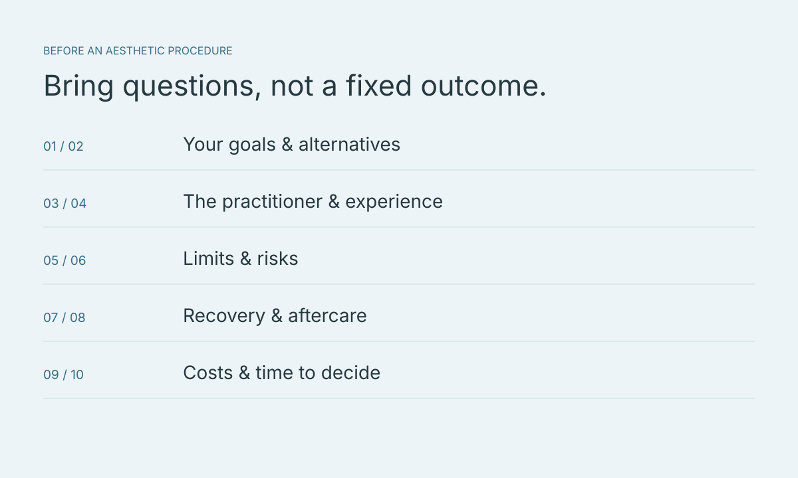

Questions to ask before an aesthetic treatment
A useful consultation clarifies what you are deciding, rather than simply choosing an appealing image. These ten questions are arranged into five stages so you can use them during the conversation and review the answers afterwards. A simulation can express a preference; treatment questions require an individual clinical assessment.

Key points
- Ask about the reasons behind an option and what remains uncertain.
- Separate simulated appearance from clinical risks and expectations.
- Record the answers and allow time to review them.
1–2: Your goal and the alternatives
Describe the change in your own words before choosing a procedure name. Include what you want to preserve. If a simulation is used, ask the clinician to distinguish your visual preference from what may be achievable for you.
The AAD highlights benefits, risks and alternatives as consultation topics. Record the reasoning alongside your notes, so the discussion still makes sense without reopening the app.

- 1. What options address my concern, including waiting or not proceeding now?
- 2. What makes the proposed option appropriate or inappropriate for me?
You can also ask:
- What is causing the thing I am concerned about — structure, skin, lost volume, muscle? The answer decides which procedures are even relevant.
- If I do nothing at all, what does this look like in a few years?
3–4: Who assesses you and who performs the procedure
The clinic’s name is not the same as the name of the person treating you. Record the assessor, practitioner and follow-up contact. If several people are involved, ask them to explain their roles.
NHS guidance recommends asking about qualifications and experience. Registration systems described by overseas sources are jurisdiction-specific; check through the relevant professional authority where you receive care.
- 3. Who will assess and treat me, and where can I verify their qualifications?
- 4. What is their experience with this work, and what limitations should I understand?
You can also ask:
- What is in place here if a complication happens during the procedure?
- May I see photographs of patients who started out similar to me, taken before treatment and again afterwards?
One caution on photographs taken before treatment and afterwards: images shot under different light, at different angles, with different make-up are not comparable. Check whether the two were taken under the same conditions.
5–6: Risks and what a simulation cannot show
A visually adjusted face does not display procedural risks, bodily response or the experience of recovery. Ask for a clear distinction between your preference, the illustration and the clinical limitations.
Instead of asking only whether an outcome can match an image, ask which aspects are useful for discussion and which should not be treated as a prediction. Record uncertainties rather than filling them in from the realism of the picture.
- 5. What important risks or limitations for me are not shown in this image?
- 6. What is a reasonable expectation, and what cannot be guaranteed?
You can also ask:
- How long does the result last, and when it wears off do I return to how I was or to something else?
- If I am unhappy, can it be corrected, by what means, and at what cost?
- What are the common side effects, and what are the rare serious ones?
7–8: Life after the appointment
Connect recovery questions with your actual work, travel and support arrangements. Get instructions for your own circumstances from the treating clinician, rather than using another person’s social post as a timetable.
A useful note has three parts: the activity you asked about, the clinician’s answer, and anything requiring clarification. This preserves individual guidance without turning it into advice for everyone.
- 7. How should I plan activities and recovery in my situation?
- 8. Who can I contact afterwards, and what is the process if a problem occurs?
9–10: The full cost and time to think
Request an understandable breakdown of what is included and when additional services could cost more. Compare the actual scope rather than using one promotional price as the total.
NHS decision guidance supports taking time without pressure from limited-time offers. Ask for information to review and prepare follow-up questions if you still do not understand an answer.
Most consultations are short, and many include an offer that expires that day. Under those conditions people decide on feeling rather than information — not through any failure of theirs, but because the situation is built that way.
A written list does two things. You do not forget the important question, and it makes asking for time to think a normal thing to do.
- 9. What does the quoted cost cover, and when could other charges arise?
- 10. How can I take the information away and consider it before deciding?
You can also ask:
- May I take the consent form home to read first?
- What product will be used, which version, and is it properly registered? May I see the box opened?
When to walk out
Pressure to decide today — a discount expiring within the day is a sales instrument, not clinical information.
A guaranteed result — bodies respond differently. A guarantee is a claim nobody can actually make.
Risk questions waved away — someone who does this daily can describe side effects in detail. Avoiding the question means something.
A longer list than you came with — arriving with one concern and leaving with five proposals is worth noticing.
Paperwork you are not allowed to take home.
No straight answer about who will perform it.
Leaving to think costs nothing. A good clinic will not mind, and anywhere that makes asking for time feel like a transgression has answered a question of its own.
What to bring
Photographs of yourself in ordinary light, without make-up, front and side, to point at what concerns you. A list of medications and supplements you take. Any previous procedures. And the questions above.
If you already have a facial proportion analysis, bring it — but as a list of things to discuss, not as a conclusion. Measurements from a photograph carry limits, and a doctor should be the one telling you which parts apply to you and which do not.
Separate explanations from expectations in your notes
Afterwards, make three columns: what the clinician explained, your understanding, and questions still open. Date any accompanying images and label each as an original, reference or simulation.
This is a conversation aid, not a treatment recommendation. If the explanations do not fit your goal or something remains unresolved, ask the assessor again before making a decision.